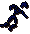
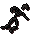
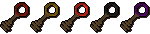
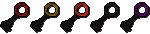

")
Shades of Mort'ton
Introduction | Location | Requirements | Recommended Items
Rebuilding the Temple | The Shades | Rewards | Development Team
Rebuilding the Temple | The Shades | Rewards | Development Team
Mort'ton is only accessible to RuneScape Members. Please subscribe to get this feature.
Please note this is a 'Dangerous' activity. If you die during this activity, you will lose your items.
Introduction

For additional information on the Shades of Mort'ton quest, please visit the 'Quests' area of the Manual.
Location

From here, you will need to run south (try to avoid the ghasts as they may rot your food) until you reach a wooden bridge. Cross it and then follow the winding path towards the town of Mort'ton.
Shortcut
Once you have completed both the In Search of the Myreque and Priest In Peril quests, you will be able to pass into the realm of Morytania and use the following shortcut to the Mort Myre Swamp.You will first have to go down the small trapdoor which is situated behind the Hair of the Dog tavern in Canifis to find the Myreque hideout. After searching and entering the far wall, you will then be led through an underground passage to some large wooden doors. Go through them and you will be lead out into the Mort Myre Swamp.
From here you should head south (run, as the ghasts will attack you and will damage you, or turn your food to rot) until you reach a wooden bridge. Climb up the tree to cross the bridge and then right-click on the tree to get the 'Climb down' option. Continue south until you reach the boat.
The boat will take you to the East of Mort'ton for free; however, you will need to pay Cyreg Paddlehorn 10 gold pieces for a return ride.
Note: On both routes you may wish to take your blessed silver sickle and pouch in order to protect yourself from ghasts. These items are obtained from the Nature Spirit quest.
Requirements
You will need to have completed the Shades of Mort'ton Quest.
Recommended Items
Mort'ton can be a dangerous place, mainly due to its remoteness. Its nearest bank is in Canifis, so you will have to decide for yourself what the most efficient method for killing and cremating the shades would be (although those who have completed In Aid of the Myreque will have access to the bank in Burgh de Rott, to the south).
In order to make pyre logs, you will first need to make sacred oil. To do this you will need to rebuild the temple using the following resources:
|
Item |
Obtained from |
![[image]](../../img/main/kbase/items/tools/hammer.gif) Hammer |
Most general stores. You will need just one hammer. |
![[image]](../../img/main/kbase/minigames/shades/olive_oil.gif) Olive oil |
Razmire's General Store. As many as you wish to make into sacred oil. |
![[image]](../../img/main/kbase/minigames/trawler/swamp_paste.gif) Swamp paste |
Razmire's Builders' Store. If you would rather make it for yourself than buy it from the shop, mix some swamp tar with flour and then cook the mixture. Swamp tar can be found in the swamps south of Lumbridge. Take at least 20. |
![[image]](../../img/main/kbase/minigames/shades/limestone_block.gif) Limestone |
Razmire's Builders' Store. Can be mined from the site just west of the Monk of Zamorak Temple, where you start the Priest in Peril quest. Take around 5. |
![[image]](../../img/main/kbase/minigames/shades/limestone_brick.gif) Limestone bricks |
Razmire's Builders' Store. Use a chisel with limestone to make these. Take around 5. |
![[image]](../../img/main/kbase/items/misc/beam.gif) Beams |
Razmire's Builders' Store. Take around 5. |
You may wish to buy a flamtaer hammer from Razmire as it increases your chance of repairing sections of the wall.
To buy these resources from Razmire you simply need to click on him and ask to see his shops.
Alternatively you may right-click him so that you can access your required shop immediately, providing that you have used the permanent cure serum on him, which can be made during the Shades of Mort'ton Quest. If you have not used the permanent cure on Razmire, you can use a temporary serum on him so that you are able to trade with him.
Rebuilding the Temple
Once you have obtained all of the items, you are ready to begin building. The temple is located in the north-east corner of Mort'ton. However, it is recommended that you log into a crowded server, or bring a group of friends, as it is a lot easier to rebuild the temple with a team while the Shades are trying to defend and knock the temple down.
![[image: example of temple status]](../../img/main/kbase/minigames/shades/temple_repair_status.gif "example of temple status") You will now need to click on the broken wall to begin repairing it. Once completed, you will have to use the 'Reinforce Wall' option in order to defend it from the shades. While doing this, you can watch your 'Sanctity' increase by looking at the Temple Repair chart in the top-right corner of the game window.
You will now need to click on the broken wall to begin repairing it. Once completed, you will have to use the 'Reinforce Wall' option in order to defend it from the shades. While doing this, you can watch your 'Sanctity' increase by looking at the Temple Repair chart in the top-right corner of the game window.
Once you have 10% Sanctity or higher, you will be able to light the 'Holy Fire Altar' which is situated in the middle of the temple. To do this, you simply need to 'use' your tinderbox on it. Once lit, use the olive oil with it to change it into sacred oil.
Please note that you can also gain Sanctity by defending the temple and killing the loar shades. The salve amulet (obtained during the Haunted Mine quest) is particularly useful when fighting shades, as it gives combat bonuses against the undead.
The Shades
Shades are the remains of a long departed soul and can be very dangerous. Please refer to the table below in order to see their combat levels.
|
Shade |
Combat Level |
Location |
![[image]](../../img/main/kbase/minigames/shades/loar_shade.gif) Loar |
40 | All over Mort'ton. |
![[image]](../../img/main/kbase/minigames/shades/phrin_shade.gif) Phrin |
60 | In the small room as you enter the tomb. |
![[image]](../../img/main/kbase/minigames/shades/riyl_shade.gif) Riyl |
80 | Found in the room behind the steel door. |
![[image]](../../img/main/kbase/minigames/shades/asyn_shade.gif) Asyn |
100 | Found in the large area behind the black door. |
![[image]](../../img/main/kbase/minigames/shades/fiyr_shade.gif) Fiyr |
120 | Found behind the silver door. |
Loar shades can be found all around Mort'ton; however, the other types of shades are located in the tomb. You will need at least a bronze key to enter the tomb, which can be obtained by cremating a level 40 loar shade.

To cremate shades successfully, it is required that you have obtained the following items:
|
Item |
Obtained from |
![[image]](../../img/main/kbase/items/lanturns_candle_torch/tinderbox.gif) Tinderbox |
Most general stores. You will need just one tinderbox. |
![[image]](../../img/main/kbase/items/potions/other_potions/sacredoil.gif) Sacred oil |
Made by using olive oil (obtained from Razmire's General Store) with the temple flame when the temple Sanctity is above 10%.
Take as many as you wish. |
![[image]](../../img/main/kbase/items/logs/normal_pyre_logs.gif) Pyre logs |
Made by using doses of sacred oil on a set of logs (any type) Take as many as you wish. |
![[image]](../../img/main/kbase/items/remains/loarash.gif) Shade remains |
Obtained by killing shades (any type) Take as many as you wish. |
Burning the Shades
![[image]](../../img/main/kbase/minigames/shades/burning_shade.gif) To burn the shades you will need different types of pyre logs. To do this, use the sacred oil on your required logs to create pyre logs. This will give you 10 Firemaking experience. Different logs require different doses of sacred oil which is shown in the table further below.
To burn the shades you will need different types of pyre logs. To do this, use the sacred oil on your required logs to create pyre logs. This will give you 10 Firemaking experience. Different logs require different doses of sacred oil which is shown in the table further below.
You will need to place the required pyre logs on the funeral pyres you used during the Shades of Mort'ton Quest and place the shade remains on top. Once you have done that, you can use your tinderbox on the pyre to cremate the remains, at which point you will be given Prayer and Firemaking experience points.
The following table shows how much experience you can gain from burning shades and what you will require in order to do so:
| Wood required | Levels required | Doses of sacred oil used | Shades that will burn on the pyre | Firemaking experience gained |
Regular logs |
5 |
2 | Loar, phrin | 50 |
![[image]](../../img/main/kbase/items/logs/oak_pyre_logs.gif) Oak logs |
20 |
2 | Loar, phrin | 70 |
![[image]](../../img/main/kbase/items/logs/willow_pyre_logs.gif) Willow logs |
35 |
3 | Loar, phrin, riyl | 100 |
![[image]](../../img/main/kbase/items/logs/teak_logs.gif) Teak logs |
40 |
3 | Loar, phrin, riyl | 120 |
![[image]](../../img/main/kbase/items/logs/arctic_pine_pyre.gif) Arctic pine Logs |
47 |
3 | Loar, phrin, riyl | 158 |
![[image]](../../img/main/kbase/items/logs/maple_pyre_logs.gif) Maple logs |
50 |
3 | Loar, phrin, riyl | 175 |
![[image]](../../img/main/kbase/items/logs/mahogany_logs.gif) Mahogany logs |
55 |
3 | Loar, phrin, riyl | 210 |
![[image]](../../img/main/kbase/items/logs/eucalyptus_pyre_logs.gif) Eucalyptus logs |
63 |
4 | Loar, phrin, riyl, asyn | 246 |
![[image]](../../img/main/kbase/items/logs/yew_pyre_logs.gif) Yew logs |
65 |
4 | Loar, phrin, riyl, asyn | 255 |
![[image]](../../img/main/kbase/items/logs/magic_pyre_logs2.gif) Magic logs |
80 |
4 | Loar, phrin, riyl, fiyr, asyn | 404.5 |
|
Type of pyre logs used |
Prayer experience per loar shade |
![[image]](../../img/main/kbase/items/remains/phrinash.gif)
Prayer experience per phrin shade |
![[image]](../../img/main/kbase/items/remains/riylash.gif)
Prayer experience per riyl shade |

Prayer experience per asyn shade |

Prayer experience per fiyr shade |
Regular logs |
25 | 37.5 | N/A | N/A | N/A |
Oak logs |
33 | 45.5 | N/A | N/A | N/A |
Willow logs |
33.5 | 46 | 61 | N/A | N/A |
![[image]](../../img/main/kbase/items/logs/teak_pyre_logs.gif) Teak logs |
33.7 | 46.2 | 61.2 | N/A | N/A |
Arctic pine logs |
33.9 | 46.4 | 61.4 | N/A | N/A |
Maple logs |
34 | 46.5 | 61.5 | N/A | N/A |
![[image]](../../img/main/kbase/items/logs/mahogany_pyre_logs.gif) Mahogany logs |
34.3 | 46.8 | 61.8 | N/A | N/A |
Eucalyptus logs |
34.4 | 46.9 | 61.9 | 79.4 | N/A |
Yew logs |
34.5 | 47 | 62 | 79.5 | N/A |
Magic logs |
35 | 47.5 | 62.5 | 80 | 100 |
Rewards
Once the shade has been cremated, a shade key or coins will appear next to the pyre. The keys can be used to gain access to the tomb (see tomb map above) which is located north-west of Mort'ton. This enables you to hunt shades of a higher level, as well as opening a chest of that type. You will need the same colour key in your inventory to open the corresponding doors.
|
Possible Loot |
| 
Bronze Coins, swamp paste, level 1 clue scroll, chaos runes, sapphire ring, amulet of Defence, silver bar, gold bar, mithril bar, magic staff, steel hatchet, steel medium helmet, steel spear, steel spear(p), steel mace, steel scimitar, steel sword, steel longsword, black hatchet, black dagger, black dagger(p), black spear, black mace, mithril dagger, mithril dagger(p). |
![[image]](../../img/main/kbase/minigames/shades/steel_keys.gif)
Steel Coins, swamp paste, fine cloth, level 2 clue scroll, chaos runes, nature runes, adamant bars, willow logs, emerald ring, Strength amulet, studded chaps, steel chainbody, steel kiteshield, steel warhammer, steel 2-handed sword, steel battleaxe, black medium helmet, black warhammer, black scimitar, black sword, black longsword, black spear, mithril medium helmet, mithril mace, mithril spear, mithril spear (p), mithril sword, adamant dagger, adamant dagger (p). |
| 
Black Coins, swamp paste, fine cloth, Level 2 clue scroll, nature runes, death runes, flamtaer hammer, willow logs, yew logs, ruby ring, amulet of magic, staff of air, staff of earth, staff of water, staff of fire, steel skirt, black chainbody, black kiteshield, black square shield, black platelegs, black full helmet, black battleaxe, black 2-handed sword, mithril kiteshield, mithril full helmet, mithril platelegs, mithril square shield, mithril chainbody, mithril scimitar, mithril 2-handed sword, mithril warhammer, mithril battleaxe, mithril mace, mithril longsword, adamant medium helmet, adamant scimitar, adamant sword, adamant hatchet. |
![[image]](../../img/main/kbase/minigames/shades/silver_keys.gif)
Silver Coins, swamp paste, fine cloth, level 3 clue scroll, death runes, blood runes, battlestaff, yew logs, magic logs, amulet of power, diamond ring, flamtaer hammer, mithril plateskirt, mithril platebody, black platebody, black spear, adamant chainbody, adamant full helmet, adamant platebody, adamant platelegs, adamant plateskirt, adamant square shield, adamant kiteshield, adamant spear, adamant Spear (p), adamant battleaxe, adamant 2-handed sword, adamant longsword, adamant warhammer, rune chainbody, rune medium helmet, rune sword, rune scimitar, rune longsword. |
Fine Cloth
Fine cloth can occasionally be found as a reward from one of the chests. This cloth is used to make splitbark armour (please refer to the table below).Cremating the higher-level shades gives you greater odds of receiving a 'higher-level' key, which in turn gives you greater odds of obtaining fine cloth from the shade's chest.
Splitbark Armour
![[image]](../../img/main/kbase/minigames/shades/splitbark_armour.gif) If you are making your own splitbark armour, simply take the items required to make each piece and speak with the armoured wizard in the Wizards' Tower.
If you are making your own splitbark armour, simply take the items required to make each piece and speak with the armoured wizard in the Wizards' Tower.
The Tower is situated south of Draynor Village, at the end of a stone bridge.
In order to wear this armour you must have level 40 Defence and a Magic level 40.
The statistics for splitbark armour are as follows:
| Item | Bark Needed | Fine Cloth Needed | Cost | ||||||||||||||||
| Attack Bonuses | Defence Bonuses | Other | |||||||||||||||||
![[Image: Stab]](../../img/main/kbase/table_text/stab1.gif "Stab") |
![[Image: Slash]](../../img/main/kbase/table_text/slash1.gif "Slash") |
![[Image: Crush]](../../img/main/kbase/table_text/crush1.gif "Crush") |
![[Image: Magic]](../../img/main/kbase/table_text/magic1.gif "Magic") |
![[Image: Range]](../../img/main/kbase/table_text/range1.gif "Range") |
|
|
|
|
|
![[Image: Summoning]](../../img/main/kbase/table_text/summoning1.gif "Summoning") |
![[Image: Strength]](../../img/main/kbase/table_text/strength1.gif "strength") |
![[Image: Prayer]](../../img/main/kbase/table_text/prayer1.gif "Prayer") |
|||||||
![[image]](../../img/main/kbase/armour/mage/splitbarkhat1.gif) Splitbark helm (m) |
2 | 2 | 6,000gp | + 0 | + 0 | + 0 | + 3 | - 2 | + 10 | + 9 | + 11 | + 3 | + 0 | + 7 | + 0 | + 0 | |||
![[image]](../../img/main/kbase/armour/mage/splitbarktop1.gif) Splitbark body (m) |
4 | 4 | 37,000gp | + 0 | + 0 | + 0 | + 10 | - 10 | + 36 | + 26 | +42 | + 15 | + 0 | + 40 | + 0 | + 0 | |||
![[image]](../../img/main/kbase/armour/mage/splitbarkbottom1.gif) Splitbark legs (m) |
3 | 3 | 32,000gp | + 0 | + 0 | + 0 | + 7 | - 7 | + 22 | + 20 | + 25 | + 10 | + 0 | + 15 | + 0 | + 0 | |||
![[image]](../../img/main/kbase/armour/mage/splitbarkgloves1.gif) Splitbark gauntlets (m) |
1 | 1 | 1000gp | + 0 | + 0 | + 0 | + 2 | - 1 | + 3 | + 2 | + 4 | + 2 | + 0 | + 3 | + 0 | + 0 | |||
![[image]](../../img/main/kbase/armour/mage/splitbarkboots1.gif) Splitbark boots (m) |
1 | 1 | 1000gp | + 0 | + 0 | + 0 | + 2 | - 1 | + 3 | + 2 | + 4 | + 2 | + 0 | + 9 | + 0 | + 0 | |||
Note: Bark is obtained by chopping a hollow tree which are found in the Haunted Woods east of Canifis. Please be aware that aggressive monsters tend to lurk thereabouts...
Development Team
Developer: Tytn H
Graphics: Tony A-V
QA: Danny G
Audio: Ian T

More articles in
Activities
|
|
|
Further Help
If this article does not help you, you may find the following sections of the RuneScape site helpful:
|
|